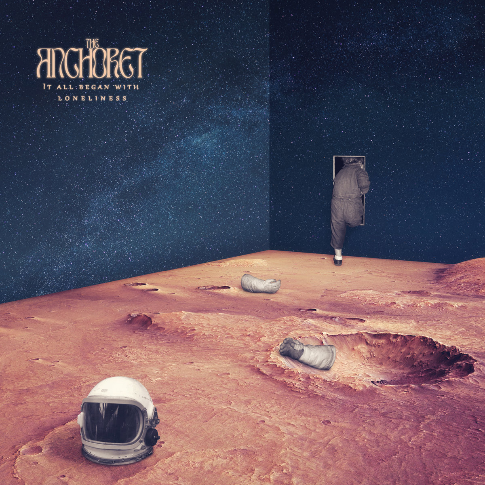
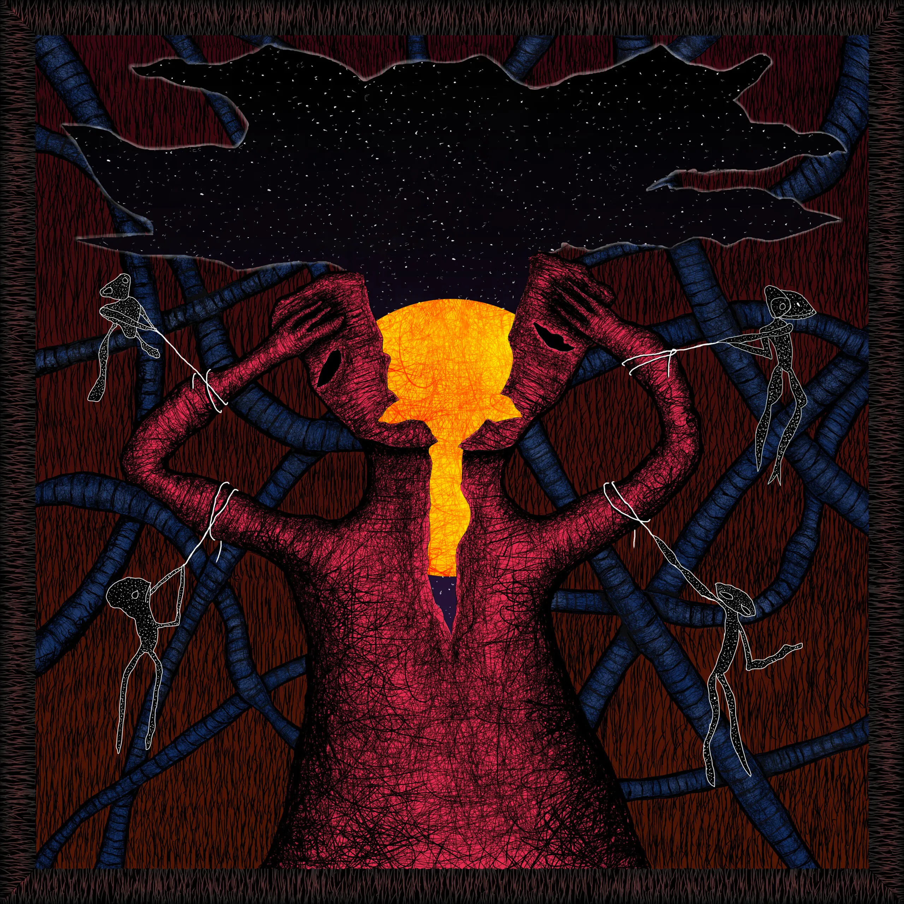
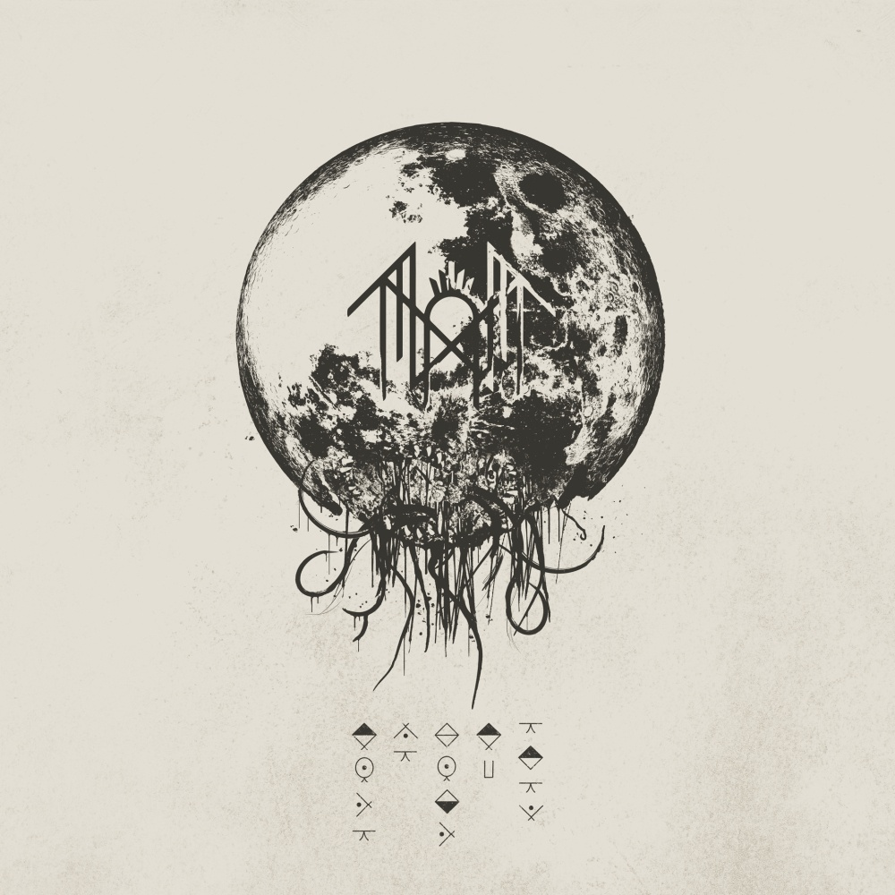

My Top 5 Albums of 2023
This is my top 5 albums that came out in the year 2023.
Top 5: It All Began with Loneliness - The Anchoret
The Anchoret is a Progressive Metal project that combines prog rock sensibilities with modern metal energy.
What made me like this album is the seamless blend of flutes, saxophone, with the heavy and melodic guitar riffs. Additionally, the transitions between heavy and soft are perfectly blended to give space and let the music breathe.
The album cover is from the band's Bandcamp. The Anchoret - Bandcamp
Back to TopTop 4: Would You Miss It - Koyo

Koyo is a Melodic Hardcore band with hints of Emo. They are from Long Island NY.
This album is the first that I've heard from the band. Considering that it is their debut album, it is a strong opener to their discography. The melodic hardcore riffs pleasantly scratches my Emo itch.
The album cover is from the band's Bandcamp. Koyo - Bandcamp
Back to TopTop 3: Skinwalker Social Club - MOSSBACK

MOSSBACK is half of the duo GRIM SALVO, which is an Experimental Rap & Hip-Hop with Acoustic and Metal fusions.
This is the first album released by MOSSBACK, and with the quality of music that they produce in GRIM SALVO, I had high expectations when I started listening to this album and well... it definitely exceeded my expectations and I listen to it regularly. It definitely has the same vibes as the ones that they did with GRIM SALVO but the prominence of acoustic guitar and otherworldly ambiance of this album makes it different from their duo work.
The album cover is from the band's Bandcamp. MOSSBACK - Bandcamp
Back to TopTop 2: Divine Inner Tension - Hail The Sun
Hail The Sun is a California-based Post-Hardcore and Progressive Rock Band, their genre is also mostly coined 'Swancore'.
This is the latest album from their discography and in my opinion, their best album to date. The singing is outright phenomenal and the lyrical themes are very relatable. The choruses are catchy and sing-a-long-able.
The album cover is from the band's Record Label. Hail The Sun - Equal Vision Records Article
Back to TopTop 1: Take me Back to Eden - Sleep Token
Sleep Token is a UK-based Progressive Metal band that is notorious for having the band members' identity private. Each member is called 'Vessel'.
Upon the drop of the first single, 'Chokehold', I knew that this album would top my list in 2023. The album is full of heavy sections, and genre bending compositions from rap, heavy metal, black metal, and even funk. A great album and a must listen from start to finish.
The album cover is from the band's website. Sleep Token - Website
Back to Top